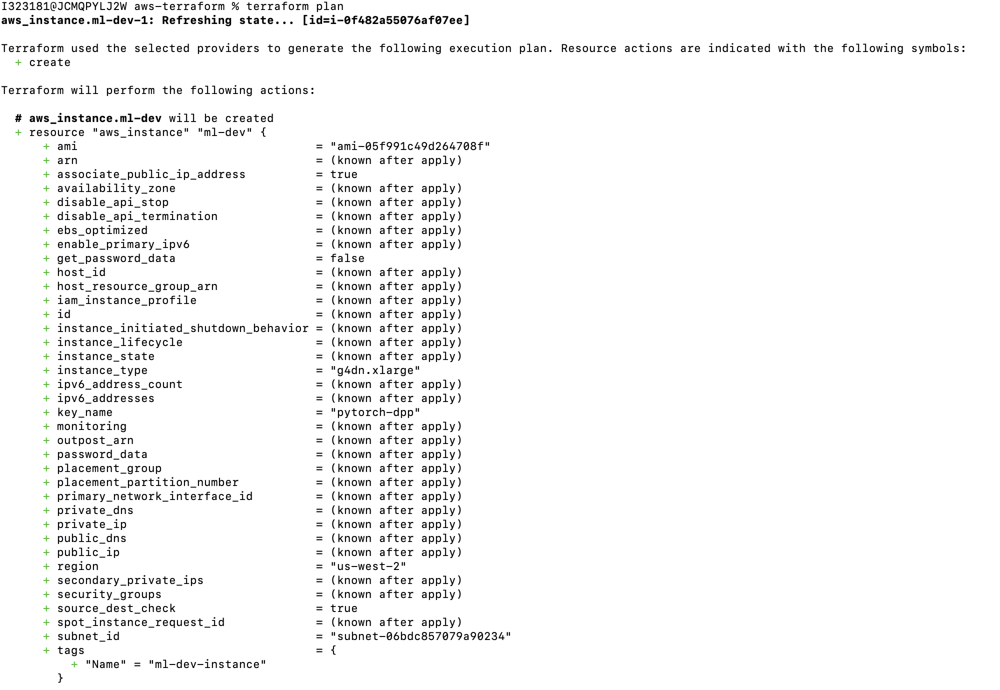
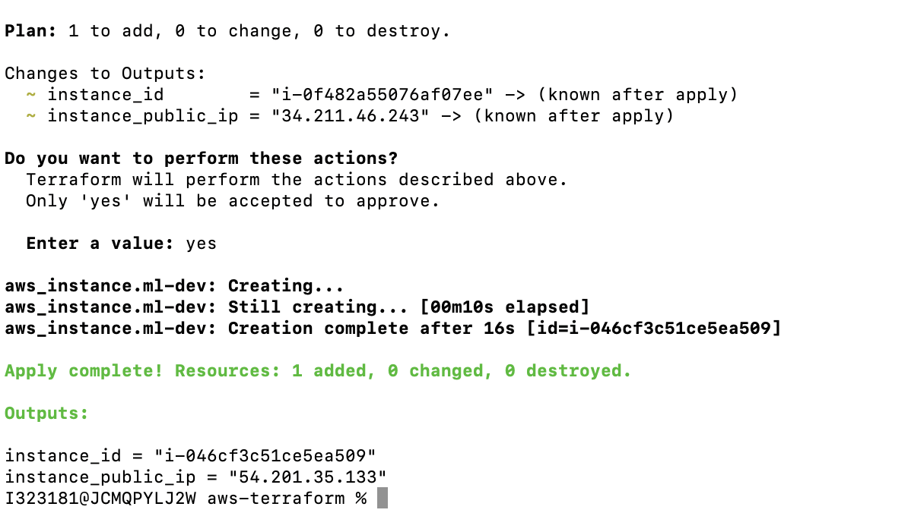
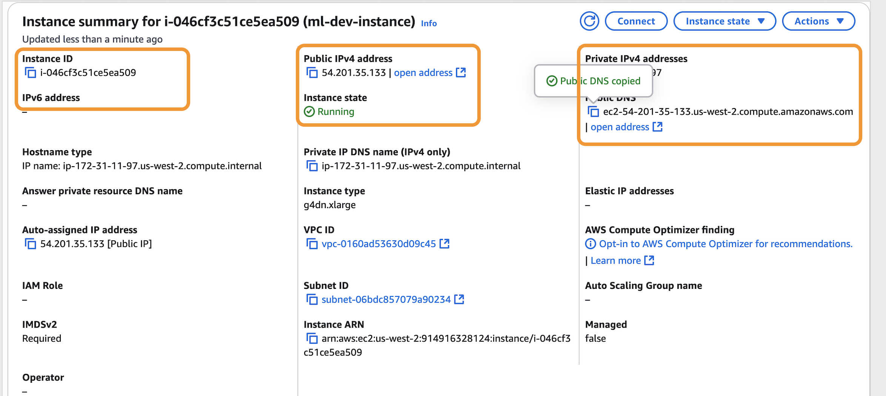
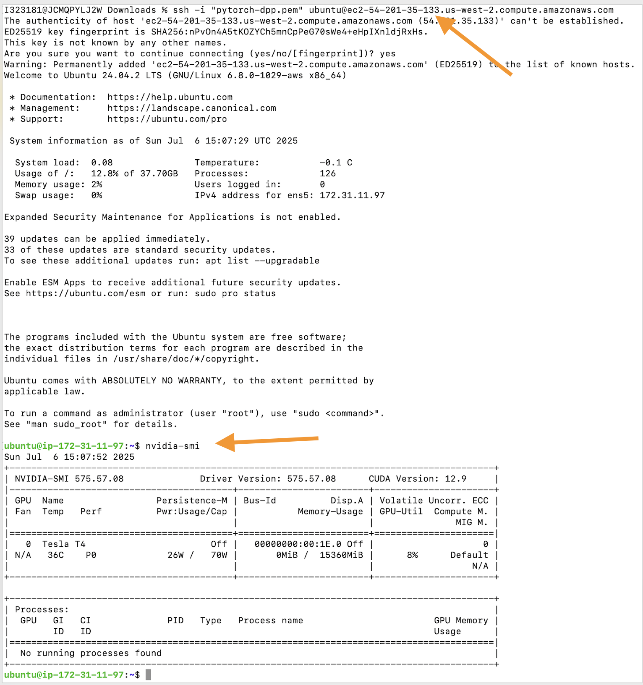
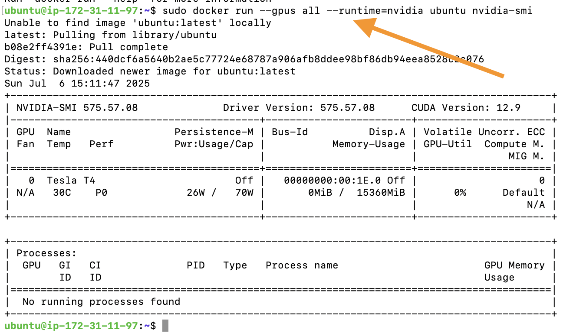
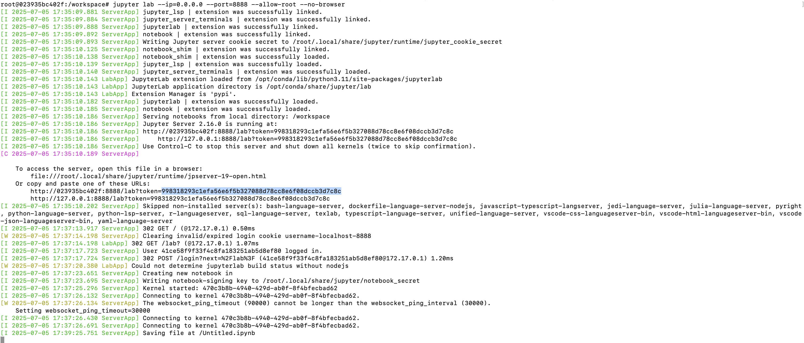
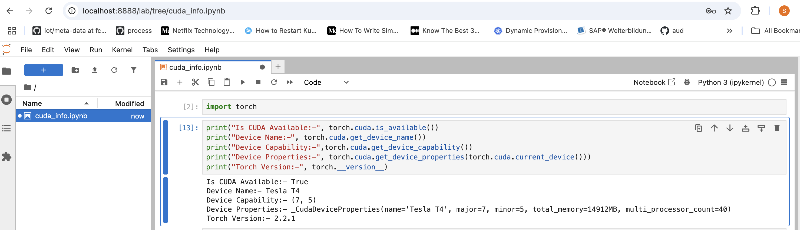

GPU Programming & GEMM Optimization · 7 min read
CUDA Setup on AWS - Terraform
On this page
- AWS Offerings
- AWS EC2 Instances
- EC2 + Manual Setup (Vanilla EC2):
- AWS Deep Learning Containers (DLC)
- Deep Learning AMIs (DLAMI)
- Note
- Steps to Setup using Terraform
- Terraform
- provider.tf
- variables.tf
- terraform.tfvars
- Install Script (CUDA Driver + Docker + CUDA Container Toolkit )
- Main Terraform script
- Post Terraform Setup:-
- ⤵ terraform plan
- ⤵ terraform apply
- ⤵ ML Dev Instance (AWS)
- Verify Driver Installation using nvidia-smi
- ⤵ Run Container & execute nvidia-smi
- ⤵ Pytorch Container & Install Jupyter on Pytorch Container
- ⤵ Accessing Jupyter notebook outside EC2
- Resources:-
This article provides a brief introduction on setting up a local development environment for deep learning model development and training using AWS. Given the high cost of GPUs, purchasing them for individual or organizational use may not be feasible. Even if an organization already owns GPUs, they might need to upgrade to newer architectures to benefit from features and performance improvements in the latest GPU generations. This makes hyperscalers such as AWS, Azure, and GCP attractive options for flexible, scalable GPU resources.
In this article, we focus on different ways to set up a deep learning environment using AWS offerings.
AWS Offerings
There are several options to create a development or training environment on AWS:
- AWS EC2 instance
- Deep Learning AMI (DLAMI)
- AWS Deep Learning Containers which can be run on \ ▪ EC2 ▪ ECS ▪ EKS
AWS EC2 Instances
Using plain EC2 GPU instances gives you a virtual server with GPU hardware but no preinstalled deep learning frameworks or CUDA software. You are responsible for manually installing the NVIDIA driver, CUDA toolkit and any frameworks like PyTorch or TensorFlow. This option offers maximum flexibility but requires more setup effort.
EC2 + Manual Setup (Vanilla EC2):
we start with a blank EC2 instance & install below components
- NVIDIA Drivers
- CUDA Toolkit
- cuDNN
- Deep learning frameworks (TensorFlow, PyTorch, etc.)
- Python, pip, virtual environments
- Docker
AWS Deep Learning Containers (DLC)
AWS provides prebuilt Docker images with popular DL frameworks and CUDA support. These containers can run on:
▪ EC2: Directly run containers on an EC2 instance with NVIDIA drivers and NVIDIA Container Toolkit installed.
▪ ECS: AWS’s fully managed container orchestration service, useful for deploying DL workloads in production or distributed setups.
▪ EKS: AWS’s managed Kubernetes service, ideal for scalable and containerized ML workloads with orchestration benefits of Kubernetes.
They are designed to be run on top of an environment that has Docker and NVIDIA Container Toolkit installed, along with the appropriate GPU drivers, for Deep Learning containers to execute we need to install below components
- NVIDIA Drivers
- Docker
- NVIDIA Container Toolkit
Deep Learning AMIs (DLAMI)
These are specialized Amazon Machine Images provided by AWS with preinstalled NVIDIA drivers, CUDA, cuDNN, and major deep learning frameworks (e.g., TensorFlow, PyTorch, MXNet). DLAMIs enable you to launch a GPU-powered instance that is ready to run DL workloads almost immediately. This reduces setup time significantly compared to a plain EC2 instance.
Note
While each of the approaches have various advantages and disadvantages
-
DLAMI is best option quickly start with development and training, it offers redcued complexity to setup they are specific to AWS and not portable to other Hyperscalers.
-
For production Deployment and Large scale training , we need scalable approach which is achieved using container orchestrators like
ECS&EKSDeep Learning containers suits exactly this usecase -
Vanilla EC2 + Manualsetup is more complex , this is helpful to understand how the entire deep learning software stack (drivers, CUDA, cuDNN, frameworks) interacts and how to troubleshoot dependencies, encountering highly unusual or persistent issues with a DLAMI or a containerized environment, sometimes going back to a bare EC2 instance and manually building the stack piece by piece can help isolate where a problem lies.
-
While
DLAMIandmanual EC2setups are fine for small-scale, single-instance workloads for quick prototyping, they don’t offer elastic scaling , can't orchestrate multiple training/inference jobs
Steps to Setup using Terraform
▪ Provision EC2 Instance
▪ Use user_data script to install NVIDIA Drivers + NVIDIA Container Toolkit
Terraform
provider.tf
provider "aws"{
region = var.aws_region
}
variables.tf
variable "aws_region" {
description = "AWS region to deploy to"
type = string
default = "us-west-2"
}
variable "instance_type" {
description = "EC2 instance type"
type = string
default = "g4dn.xlarge"
}
variable "key_name" {
description = "SSH key pair name"
type = string
}
variable "subnet_id" {
description = "Subnet to launch EC2 instance in"
type = string
}
variable "ami_id" {
description = "AMI ID with a supported OS for NVIDIA drivers"
type = string
}
variable "security_group" {
description = "Security Group to be attached to EC2"
type = string
}
variable "vpc_id" {
description = "VPC for EC2 Instance"
type = string
}
variable "ebs_volume_size_gb" {
description = "The size of the EBS volume in GiB."
type = number
default = 40 # Example: 10 GiB
}
variable "ebs_volume_type" {
description = "The type of the EBS volume (e.g., gp2, gp3, io1, st1, sc1)."
type = string
default = "gp3" # General Purpose SSD
}
variable "ebs_device_name" {
description = "The device name to expose to the instance (e.g., /dev/sdf)."
type = string
default = "/dev/sda1" # Common device name for Linux instances
}
variable "enable_gpu_software_install" {
description = "Flag to decide whether to install the GPU software or not"
type = bool
default = false
}
terraform.tfvars
aws_region = "us-west-2"
instance_type = "g4dn.xlarge"
key_name = "pytorch-dpp"
subnet_id = "subnet-06bdc857079a90234"
ami_id = "ami-05f991c49d264708f"
security_group = "sg-0d6e28e904eb28a87"
vpc_id = "vpc-0160ad53630d09c45"
ebs_volume_size_gb=40
ebs_volume_type="gp3"
ebs_device_name="/dev/sda2"
enable_gpu_software_install = true
Install Script (CUDA Driver + Docker + CUDA Container Toolkit )
#!/bin/bash
# Install CUDA Driver
set -e
set -x
echo "Installing CUDA Drivers"
wget https://developer.download.nvidia.com/compute/cuda/repos/ubuntu2204/x86_64/cuda-keyring_1.1-1_all.deb
sudo dpkg -i cuda-keyring_1.1-1_all.deb
sudo apt-get update
sudo apt-get install -y cuda-drivers
echo "CUDA Driver Installation Completed"
# Install Docker
# Add Docker's official GPG key:
echo "Installing Docker Engine"
sudo apt-get update
sudo apt-get install ca-certificates curl
sudo install -m 0755 -d /etc/apt/keyrings
sudo curl -fsSL https://download.docker.com/linux/ubuntu/gpg -o /etc/apt/keyrings/docker.asc
sudo chmod a+r /etc/apt/keyrings/docker.asc
# Add the repository to Apt sources:
echo \
"deb [arch=$(dpkg --print-architecture) signed-by=/etc/apt/keyrings/docker.asc] https://download.docker.com/linux/ubuntu \
$(. /etc/os-release && echo "${UBUNTU_CODENAME:-$VERSION_CODENAME}") stable" | \
sudo tee /etc/apt/sources.list.d/docker.list > /dev/null
sudo apt-get update
sudo apt-get install -y docker-ce docker-ce-cli containerd.io docker-buildx-plugin docker-compose-plugin
echo "Docker Engine Installation completed"
# Install NVIDIA Container Toolkit
echo "Installing NVIDIA Container Toolkit "
curl -fsSL https://nvidia.github.io/libnvidia-container/gpgkey | sudo gpg --dearmor -o /usr/share/keyrings/nvidia-container-toolkit-keyring.gpg \
&& curl -s -L https://nvidia.github.io/libnvidia-container/stable/deb/nvidia-container-toolkit.list | \
sed 's#deb https://#deb [signed-by=/usr/share/keyrings/nvidia-container-toolkit-keyring.gpg] https://#g' | \
sudo tee /etc/apt/sources.list.d/nvidia-container-toolkit.list
sudo apt-get update
export NVIDIA_CONTAINER_TOOLKIT_VERSION=1.17.8-1
sudo apt-get install -y \
nvidia-container-toolkit=${NVIDIA_CONTAINER_TOOLKIT_VERSION} \
nvidia-container-toolkit-base=${NVIDIA_CONTAINER_TOOLKIT_VERSION} \
libnvidia-container-tools=${NVIDIA_CONTAINER_TOOLKIT_VERSION} \
libnvidia-container1=${NVIDIA_CONTAINER_TOOLKIT_VERSION}
sudo nvidia-ctk runtime configure --runtime=docker
sudo systemctl restart docker
nvidia-ctk runtime configure --runtime=docker --config=$HOME/.config/docker/daemon.json
echo "Configuration of NVIDIA Container Toolkit completed "
echo "User data script finished."
Main Terraform script
resource "aws_instance" "ml-dev-1" {
ami = var.ami_id
instance_type = var.instance_type
subnet_id = var.subnet_id
key_name = var.key_name
vpc_security_group_ids = [var.security_group]
associate_public_ip_address = true
root_block_device {
volume_size = var.ebs_volume_size_gb
volume_type = var.ebs_volume_type # You can also make this a variable if needed
delete_on_termination = true # Default behavior, but good to be explicit
}
user_data = var.enable_gpu_software_install ? file("${path.module}/install_gpu_software.sh") : ""
tags = {
Name = "ml-dev-instance"
}
}
output "instance_id" {
description = "The ID of the EC2 instance."
value = aws_instance.ml-dev-1.id
}
output "instance_public_ip" {
description = "The public IP address of the EC2 instance."
value = aws_instance.ml-dev-1.public_ip
}
Post Terraform Setup:-
⤵ terraform plan

⤵ terraform apply

⤵ ML Dev Instance (AWS)

Verify Driver Installation using nvidia-smi

⤵ Run Container & execute nvidia-smi
sudo docker run -it --gpus all --runtime=nvidia ubuntu nvidia-smi

⤵ Pytorch Container & Install Jupyter on Pytorch Container
sudo docker run -it --gpus all --runtime=nvidia -p 8888:8888 pytorch/pytorch:latest
pip install jupyter
jupyter lab --ip=0.0.0.0 --port=8888 --allow-root --no-browser

⤵ Accessing Jupyter notebook outside EC2
``` ssh -i pytorch-dpp.pem -L 8888:localhost:8888 ubuntu@ec2-54-201-35-133.us-west-2.compute.amazonaws.com
```
